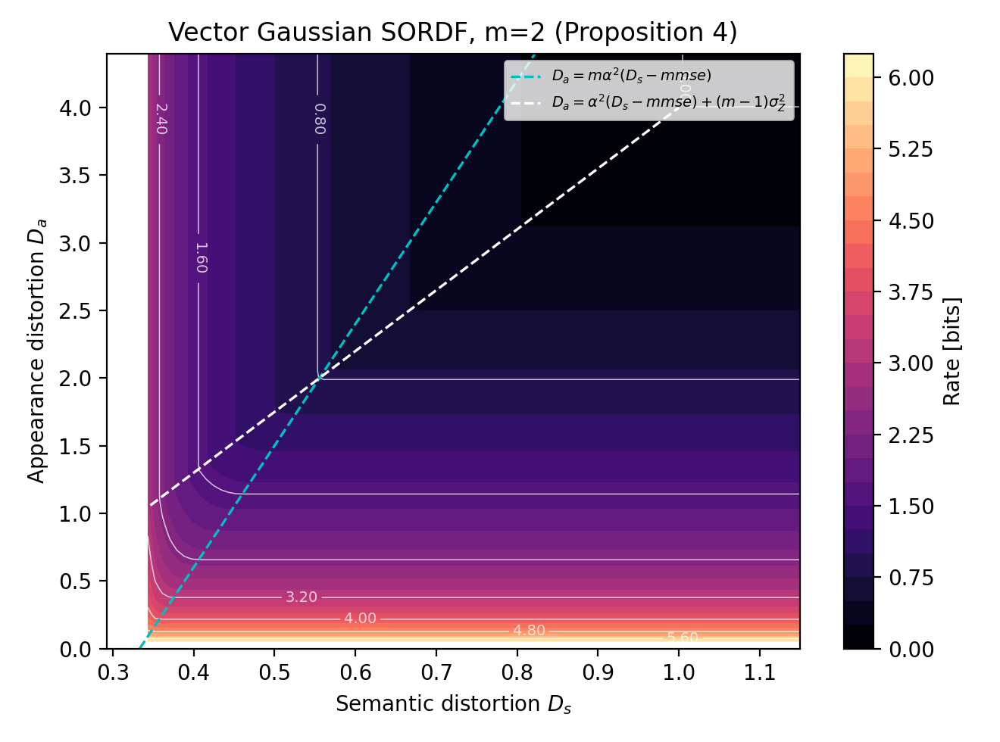
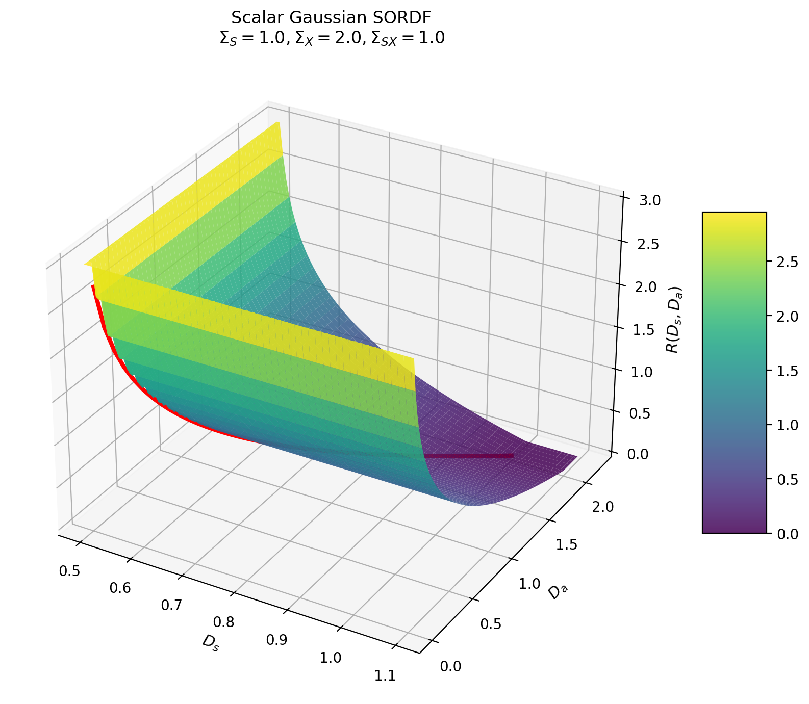

A Rate-Distortion Framework for Characterizing Semantic Information
1. Background & Motivation
The Gap: Shannon's theory excludes semantics, focusing purely on reconstructing bits. Traditional compression often leads to blurry images under low bitrates.
The Concept: Semantic aspects correspond to achieving inference goals. By splitting a source into an unobservable intrinsic state $S$ and an observable appearance $X$, we can jointly optimize reconstruction and inference.
2. Problem Modeling
We model the memoryless source as $(S, X) \sim p(s,x)$. The encoder only observes $X$, while the decoder reconstructs both $S$ and $X$.
(Intrinsic)
(Extrinsic)
R bits
3. Solution Methodology & Proof
Theorem 1 characterizes the State-Observation Rate-Distortion Function (SORDF) [2021]:
Proof Methodology:
- One-shot Equivalence: Prove $\mathbb{E}[d_s(S, \hat{S})] = \mathbb{E}[\hat{d}_s(X, \hat{S})]$ by exploiting the Markov chain $S \leftrightarrow X \leftrightarrow \hat{S}$ [10].
- Tensorization: Extend the equivalence to multi-letter blocks using i.i.d. source properties.
- Reduction: Convert the indirect problem into a standard lossy coding problem under dual constraints.
4. Original Case Studies
Case 1: Jointly Gaussian Model
When both $S$ and $X$ are jointly Gaussian, the optimal rate depends strictly on the active bottleneck region.


Case 2: Binary Classification
For binary Bernoulli states with conditionally Gaussian observations, the optimal rate and threshold weighting $g(x)$ are derived.


5. MNIST EXPERIMENTAL VERIFICATION
To validate the generalized Information Bottleneck (IB) framework, we design an end-to-end multi-task lossy compression architecture integrating data reconstruction, perceptual quality, and classification accuracy.
Problem Modeling & Constraints
- Input \(X\): \(28 \times 28\) MNIST image pixels.
- Semantic Target \(S\): Digit label \(\{0,1,\dots,9\}\) under Hamming distortion.
- Rate-Distortion-Perception-Classification (RDPC): $$R(D, P, C) = \min_{p_{\hat{X}|X}} I(X; \hat{X})$$ $$\text{s.t. } \mathbb{E}[\Delta(X, \hat{X})] \le D, \;\; d(p_X, p_{\hat{X}}) \le P, \;\; H(S|\hat{X}) \le C$$
Joint Loss Function:
*Where \(\lambda_d, \lambda_p, \lambda_c\) control the tradeoff between pixel reconstruction (MSE), perceptual fidelity (Wasserstein-1 loss), and classification cross-entropy (CE).
Experimental Pipeline
- Encoder \(E\): Maps source image \(X\) into quantized latent features \(Z\) to bound compression rate \(R\).
- Generator \(G\): Reconstructs \(\hat{X}\) from latent features \(Z\) under joint multi-task gradients.
- Discriminator \(D\): Jointly trained to minimize Wasserstein-1 distance, enforcing perfect realism and avoiding blurred outputs.
- Classifier \(C\): Pre-trained and frozen network calculating the classification accuracy and feedback loss.
Experimental Results

Fig 5: Rate-Distortion-Perception-Classification (RDPC) Tradeoff and Reconstructed Samples on MNIST Dataset.